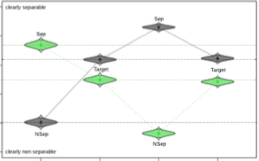

Priming and Anchoring Effects in Visualization
(opens in new tab)
Venue. TVCG (2017)
Abstract. We investigate priming and anchoring effects on perceptual tasks in visualization. Priming or anchoring effects depict the phenomena that a stimulus might influence subsequent human judgments on a perceptual level, or on a cognitive level by providing a frame of reference. Using visual class separability in scatterplots as an example task, we performed a set of five studies to investigate the potential existence of priming and anchoring effects. Our findings show that - under certain circumstances - such effects indeed exist. In other words, humans judge class separability of the same scatterplot differently depending on the scatterplot(s) they have seen before. These findings inform future work on better understanding and more accurately modeling human perception of visual patterns.
Link to this page: